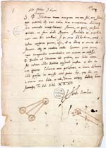
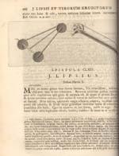
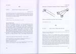

Justus Lipsius 1606 – 2006
Samenstelling: Jeanine de Landtsheer en A.Th. Bouwman
De webpresentatie behandelt de volgende onderwerpen:
11. Lipsius in brieven (I)
De ongeveer 4300 brieven van en aan Lipsius leggen een indrukwekkend getuigenis af van zijn betrokkenheid in de politieke en intellectuele wereld van zijn tijd. Veel van zijn uitgaande brieven liet hij door zijn inwonende studenten of secretarissen overschrijven, zowel als stijloefening, als om een kopie van zijn post te houden. Evenals Erasmus bezorgde hij van tijd tot tijd uitgaven van zijn correspondentie, telkens honderd brieven tegelijk. In totaal publiceerde Lipsius zelf acht zogenaamde Centuriae en stelde hij nog twee andere samen die postuum verschenen. Zowel Lipsius’ handschrift als zijn bondige stijl en specifieke woordkeuze stellen hoge eisen aan de kennis en ervaring van de lezer. Petrus Burmannus, de Leidse bibliothecaris dankzij wiens inspanning het Musaeum Lipsianum zich in de Leidse bibliotheek bevindt, bezorgde een uitgave van 850 brieven uit Lipsius’ correspondentie. De moderne editie van Lipsius’ brieven verschijnt sinds 1979 in een monumentale reeks van naar verwachting negentien delen, de Iusti Lipsi Epistolae, een doorwrocht standaardwerk van internationale allure, zoals Lipsius ook toekomt.
|
11.1 || Brief van Abraham Ortelius aan Lipsius, gedateerd 29
september 1595. Manuscript. [Lips. 4]. –– Lipsius had illustraties nodig voor zijn Poliorcetica. In deze brief stuurde Ortelius (1527-1598) tekeningetjes van een stormram en een karretje. |
|  |
11.2 || Sylloges epistolarum, a viris illustribus scriptarum. Ed. P. Burman. Tomus I. Quo Justi Lipsii, et ad eum virorum eruditorum, epistolae continentur (Leiden: S. Luchtmans, 1724). [DOUSA 79 7401]. –– Burmannus nam in zijn Sylloges epistolarum – een vijfdelige uitgave van geleerdencorrespondentie – maar liefst 850 brieven van of aan Lipsius op, waaronder die van Ortelius aan Lipsius. |
|  |
|
11.3 || Iusti Lipsi Epistolae. Pars VIII: 1595. Ed. J. De Landtsheer (Brussel 2004). [DOUSA 79 8628]. –– De volledige correspondentie van Lipsius wordt sinds 1979 uitgegeven in de reeks Iusti Lipsi Epistolae, Elke brief is voorzien van een samenvatting en van filologische en historische commentaar. |
|  |
| vorige pagina | volgende pagina |